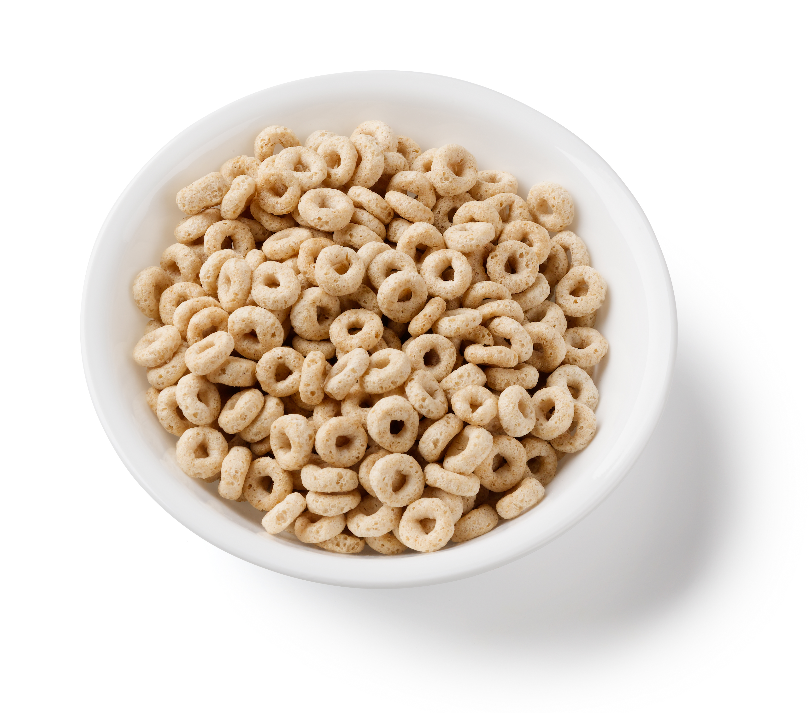

World's Best Cereal

Description
This is a yummy breakfast. If you like breakfast you'll probably like this one. It is tasty and has a lot of flavor.
Ingredients
- Cereal of your choice
- Milk or milk alternative of your choice
Steps
- Select one cereal bowl
- Pour cereal into the bowl
- Pour milk or milk alternative into the bowl. Take care to not overfill the bowl, but be sure to add enough
milk that the cereal is not too dry
- Eat and enjoy!